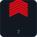

Astsubay Kıdemli Çavuş
| XP eşiği | 10.000 |
|---|---|
| Sıra | 8 / 19 |
| Önceki | Astsubay Çavuş |
| Sonraki | Astsubay Üstçavuş |
Açıklama
Astsubay Kıdemli Çavuş (Astsb.Kd.Çvş.), Astsubay sınıfında kariyer rütbesidir. Bu rütbeye ulaşmak için toplam 10.000 tecrübe gerekir. Maç içi slot rütbesi kariyerden bağımsızdır; komuta kıdem sırasına göre devredilir.